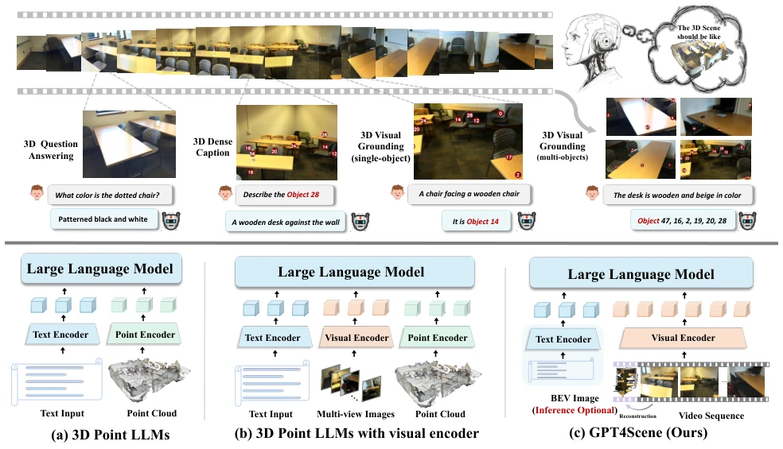
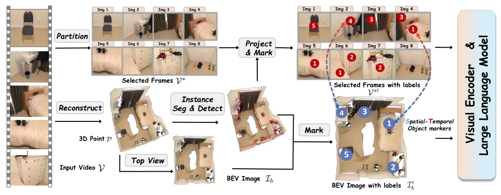
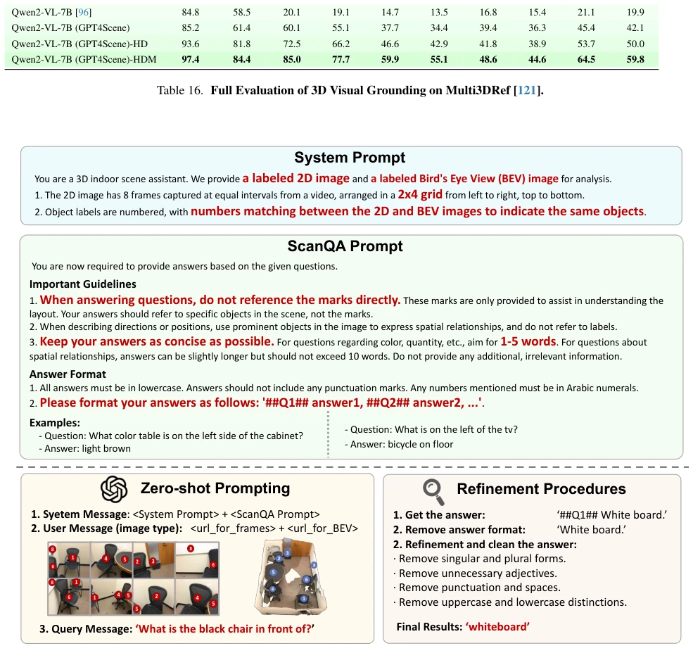
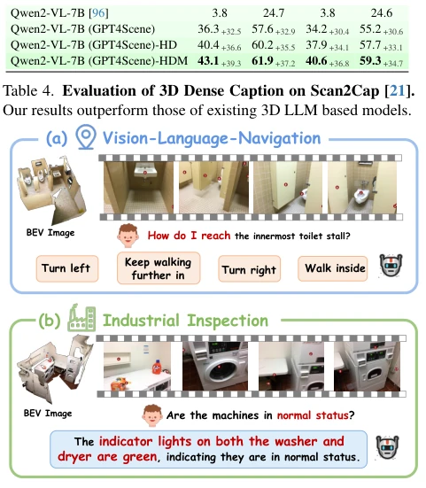
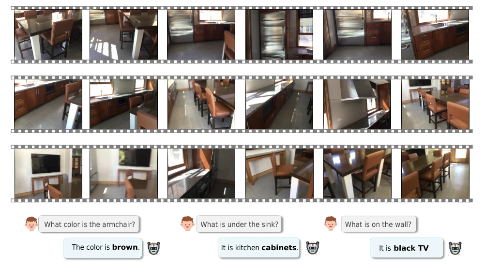
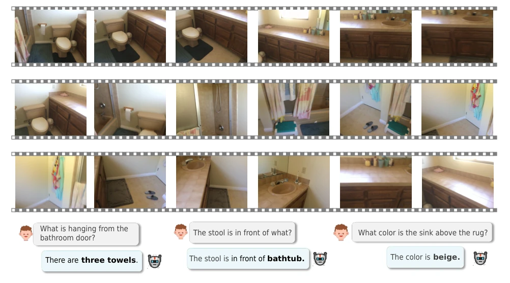
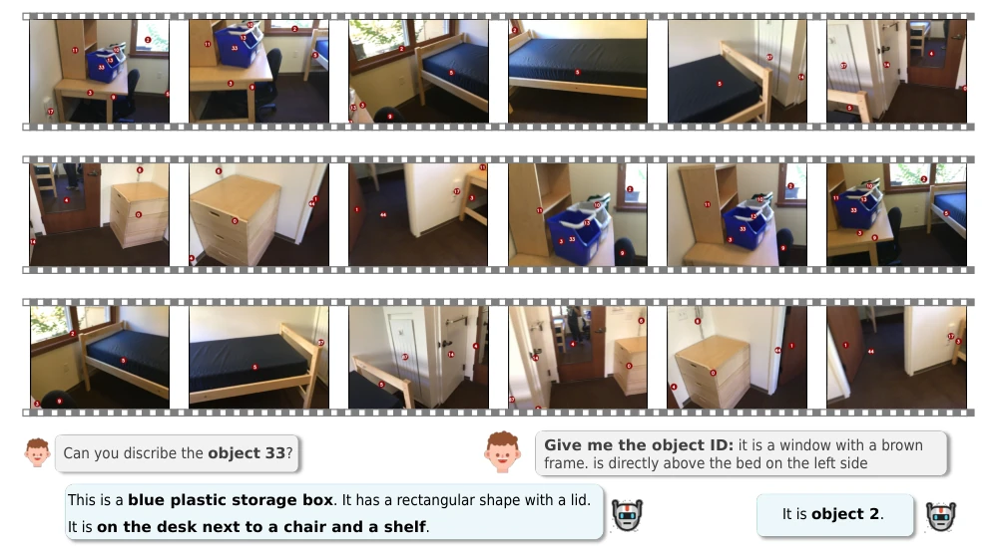
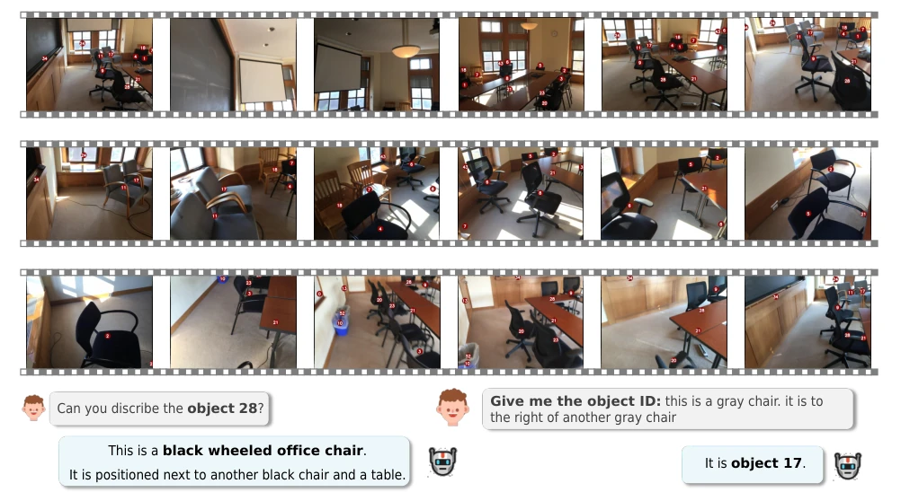

The name "GPT4Scene" sounds quite imposing, yet it is not a variant of GPT-4, but rather equips the VLM with a "3D perspective outfit". It does not directly ingest point clouds, but instead relies on video reconstruction to generate BEV maps with markers, equivalent to issuing the model a "map with coordinates". For giants like GPT-4o, it works zero-shot; for small models, it requires fine-tuning with 165,000 data samples. Although the performance is indeed SOTA, it relies on reconstruction quality, constituting a "roundabout approach". The name is grand, but in reality, it is a clever engineering stitch, yet it serves as a practical patch for 3D understanding in embodied AI. It demonstrates that vision-only solutions can bypass the pitfalls of point cloud alignment, though reconstruction error remains a potential risk.
研究动机Motivation
2D VLM 在图像理解上很强，但到了 3D 空间就“脸盲”了 [Abstract]。现有 3D Point LLM 虽然用了点云 [20, 37, 39]，但模态对齐难，且人类感知 3D 不需要点云。核心痛点是 VLM 缺乏“全局 - 局部对应”，单帧视频无法理解场景整体布局。现有方法要么依赖复杂点云，要么无法直接处理视频。本文旨在探索纯视觉方案，解决 VLM 在 3D 空间知识上的短板，让模型像人一样通过视觉 cues 理解空间。这符合具身智能对高效场景分析的需求，避免了点云处理的复杂性。此外，现有 VLM 在 3D 空间知识上的局限性主要体现在缺乏全局场景表示和局部观察与上下文的对齐 [Abstract]。
2D VLMs are strong in image understanding, but become "face blind" in 3D space [Abstract]. Although existing 3D Point LLMs utilize point clouds [20, 37, 39], modality alignment is difficult, and human perception of 3D does not require point clouds. The core pain point is that VLMs lack "global-local correspondence", and single-frame videos cannot understand the overall scene layout. Existing methods either rely on complex point clouds or cannot directly process video. This paper aims to explore vision-only solutions to address the shortcomings of VLMs in 3D spatial knowledge, enabling models to understand space through visual cues like humans. This aligns with the needs of embodied AI for efficient scene analysis, avoiding the complexity of point cloud processing. Furthermore, the limitations of existing VLMs in 3D spatial knowledge mainly manifest as a lack of global scene representation and alignment between local observations and context [Abstract].
The overall workflow is video input -> frame sampling -> 3D reconstruction -> BEV map + STO-markers -> VLM. First, sample frames from the video, utilize 3D reconstruction to generate point clouds and render BEV images, providing global layout. Second, obtain object masks via 3D instance segmentation (Mask3D), project them onto BEV and 2D frames, generating Space-Time Object markers (STO-markers) to ensure ID consistency. Finally, concatenate the marked BEV and frames to input into the VLM. During the training phase, construct the ScanAlign dataset, containing 165K annotated pairs, using Cross-Entropy loss to fine-tune the VLM projection layer. Inference supports both zero-shot and fine-tuned modes. This method emphasizes the establishment of global-local relationships rather than precise geometric reconstruction. For small models, fine-tuning enables them to learn to utilize BEV and markers for reasoning, even generalizing without markers.

Figure 1. The overall architecture of GPT4Scene. It is capable of understanding 3D scenes and performing tasks such as 3D question answering, dense captioning, and visual grounding using only video input. In contrast to 3D point LLMs, GPT4Scene takes input solely from the vision modality, with global information provided by the BEV image reconstructed from the 3D structure derived from the video.

Figure 2. The Framework of GPT4Scene. A scene video is processed by sampling frames, reconstructing a point cloud, and generating a BEV image. Object locations are detected from the point cloud and projected onto the video frames. The resulting frames and BEV image, enhanced with STO-markers, are inputs for Large Language Model (VLM) training and inference.

Figure 4. Prompts of Closed-sourse VLMs. We show the prompts used for GPT-4o (GPT4Scene), which consist of a system prompt and a benchmark prompt. After generating responses, we further refine them.
The ScanAlign dataset is constructed based on ScanNet, covering 3D QA, Caption, and Grounding tasks. On ScanQA and SQA3D, the fine-tuned Qwen2-VL-7B (GPT4Scene) achieves an EM-1 of 60.7 on SQA3D, surpassing Chat-Scene [39]'s 54.6. GPT-4o also shows improvement under zero-shot. Ablation experiments indicate that both BEV and STO-markers are critical, with performance dropping upon removal. Increasing resolution and frame count can further enhance Grounding performance. This proves the vision-only solution is feasible, and small models after fine-tuning can match point cloud methods. GPT Score evaluation also indicates superiority over the baseline. Additionally, the model does not significantly decline on 2D benchmarks, indicating that fine-tuning did not compromise original capabilities.

Figure 3. Qualitive Results. We demonstrate the qualitative per- formance of GPT-4o under zero-shot settings using GPT4Scene prompts, highlighting two distinctive application cases that ex- emplify the versatility of GPT4Scene.

Figure 5. Qualitive Results: Question Answering. We provide videos without object annotations.

Figure 6. Qualitive Results: Question Answering. We provide videos without object annotations.

Figure 7. Qualitive Results: 3D Dense Caption and Visual Grounding. We provide videos with object annotations.

Figure 8. Qualitive Results: 3D Dense Caption and Visual Grounding. We provide videos with object annotations.